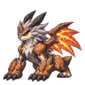
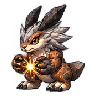
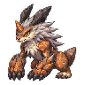

No.199
フリントゥス
灯 希少
跳躍の瞬間だけ肩から熱い翼を開く。古い工房では守り神として描かれる。
基本データ
| 図鑑番号 | No.199 |
|---|---|
| タイプ | 灯タイプ |
| 進化 | フリンダからLv.42で進化 |
| 入手方法 | 砂時計の墓所（Lv.63〜66）、溶岩の段丘（Lv.75〜78）の草むらに出現。 |
Lv.50の能力値
| 体力 | 304 | |
|---|---|---|
| 物理攻撃 | 176 | |
| 物理防御 | 131 | |
| 特殊攻撃 | 184 | |
| 特殊防御 | 129 | |
| 素早さ | 122 | |
| 命中 | 100 | |
| 回避 | 101 |
冒険中の能力値はレベルに応じて上がります。オンライン対戦の通常レンタルはLv.50で統一されます。
覚える技
| 技 | タイプ | 分類 | 威力 | 命中 | PP | 効果 |
|---|---|---|---|---|---|---|
| 赤暁の大輪 | 灯 | 特殊 | 52 | 80 | 10 | 灯の力をすべて注ぐ特殊攻撃。威力は最大級だが、命中がやや低い。10%で灯焼けにすることがある。 |
| 陽炎の冠 | 灯 | 物理 | 42 | 90 | 10 | 灯の力で打ち込む強力な物理攻撃。10%で灯焼けにすることがある。 |
| 暁を駆ける | 無 | 物理 | 40 | 92 | 15 | 夜明けの光をまとって駆け抜ける強い物理攻撃。どのタイプにも等しく当たる。 |
| 灯祭りの祈り | 灯 | 回復 | — | — | 10 | 灯の力で最大体力の45%を回復する。 PPを1消費する。 |
進化の系譜

フリトLv.24 ▶
フリンダLv.42 ▶- フリントゥス
タイプ相性
灯タイプの技は芽タイプに強く（1.5倍）、潮タイプの技を受けると効果が大きくなります。同じタイプの技を使うと威力が1.15倍になります。